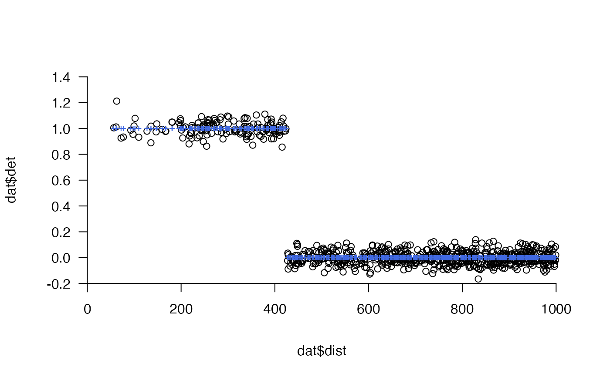
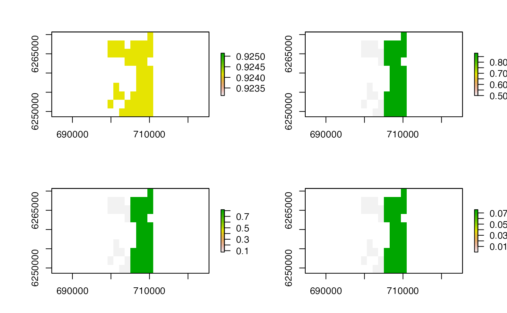
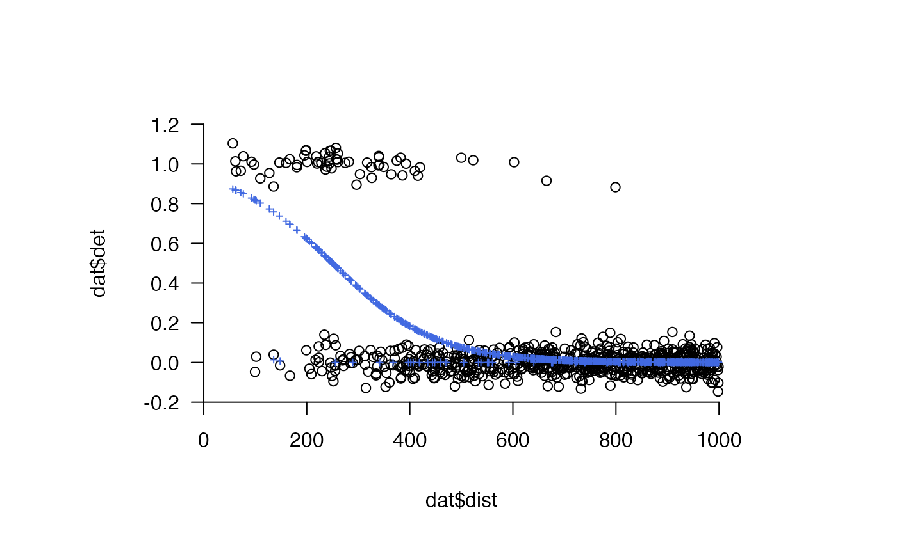

This function simulates detections at passive acoustic telemetry receivers under a detection model that depends on distance. To implement the function, the underlying movement path that gives rise to detections (or not) must be supplied (via path) along with the locations of receivers (xy) at which detections can be made. At each point along the movement path (i.e., time step), the function calculates the distances from that point to all of the receivers and evaluates a user-supplied detection probability function, based on distance, to determine detection probability at each receiver. The function then simulates binary detection outcomes from a binomial distribution conditional on this probability, and returns these in a matrix with one simulated outcome for each time step and receiver.
sim_detections( path, xy, crs = NA, calc_detection_pr, by_timestep = FALSE, delta_t = NULL, seed = NULL, plot = TRUE, jitter = function(n) stats::rnorm(n, 0, 0.05), add_prob = list(col = "royalblue", pch = 3, cex = 0.5), xlim = c(0, 1000), verbose = TRUE, ... )
Arguments
| path | A two-column matrix of the coordinates of the movement path (x, y). |
|---|---|
| xy | A two-column matrix of the coordinates of receivers (x, y). |
| crs | A |
| calc_detection_pr | A function that takes in a vector of distances and returns a vector of detection probabilities. |
| by_timestep | A logical variable that defines whether or not |
| delta_t | (optional) An integer that defines the number of time steps over which to aggregate detections. If provided, detections are summed over each |
| seed | An integer that is used to set the seed to enable reproducible simulations (see |
| plot | A logical variable that defines whether or not to plot detections (and probabilities) against distances. |
| jitter, add_prob, xlim, ... | Plot customisation options. |
| verbose | A logical variable that defines whether or not to print messages to the console to relay function progress. |
Value
If delta_t = NULL, then function returns a named list with three matrices that define, for each path position (rows) and each receiver (columns), (a) the distance of that position from each receiver (`dist_mat'), (b) the probability of detection at that receiver (`prob_mat') and (c) the simulated outcome (0, no detection; 1, detection) (`det_mat'). If delta_t is specified, then the function returns a list with a `raw' and an `agg' element. The raw elements contains the matrices described above; the `agg' element contains the aggregated versions of these matrices, with detections summed over each delta_t interval and distances and probabilities averaged (using the arithmetic mean) over each interval. If plot = TRUE, the function also returns a plot of the (raw) detections (0, 1) and, if specified, the corresponding probabilities.
Details
The function assumes that the individual transmits an acoustic signal which has the capacity to be detected at each time step. In reality, acoustic transmitters are often programmed with a randomly varying delay, but this is not currently implemented. The function also assumes that all receivers that are supplied are able to make detections. If the receivers at which an individual could be detected change over time, it may be necessary to apply the function iteratively or post-process the outcomes to ensure that individuals are not detected at inactive receivers.
See also
sim_array, sim_path_* and sim_detections provide an integrated workflow for simulating acoustic arrays, movement paths in these areas and detections at receivers arising from movement. To convert the detection matrix to dataframe, see make_df_detections.
Author
Edward Lavender
Examples
#### Step (1) Simulate an array in an area array_ls <- sim_array(boundaries = raster::extent(dat_coast), coastline = dat_coast, n_receivers = 100, arrangement = "regular", seed = 1)#> flapper::sim_array() called (@ 2021-12-02 12:00:37)... #> ... Defining area... #> ... Incorporating coastline... #> ... Incorporating receivers... #> ... ... Simulating receivers...#> Warning: CRS object has comment, which is lost in output#> ... Plotting array...#>#> ... Defining outputs... #> ... flapper::sim_array() call completed (@ 2021-12-02 12:00:37) after ~0 minutes.raster::lines(dat_coast)#### Step (2) Simulate a movement path in this area n <- 500 path_ls <- sim_path_sa(n = n, sim_step = function(...) stats::rgamma(1, shape = 25, scale = 25), area = array_ls$array$sea, seed = 1, plot = FALSE )#> flapper::sim_path_sa() called (@ 2021-12-02 12:00:37)... #> ... Setting up simulation... #> ... Simulating movement path... #> | | | 0%#> Warning: CRS object has comment, which is lost in output#> | | | 1% | |= | 1% | |= | 2% | |== | 2% | |== | 3% | |=== | 4% | |=== | 5% | |==== | 5% | |==== | 6% | |===== | 7% | |===== | 8% | |====== | 8% | |====== | 9% | |======= | 9% | |======= | 10% | |======= | 11% | |======== | 11% | |======== | 12% | |========= | 12% | |========= | 13% | |========== | 14% | |========== | 15% | |=========== | 15% | |=========== | 16% | |============ | 17% | |============ | 18% | |============= | 18% | |============= | 19% | |============== | 19% | |============== | 20% | |============== | 21% | |=============== | 21% | |=============== | 22% | |================ | 22% | |================ | 23% | |================= | 24% | |================= | 25% | |================== | 25% | |================== | 26% | |=================== | 27% | |=================== | 28% | |==================== | 28% | |==================== | 29% | |===================== | 29% | |===================== | 30% | |===================== | 31% | |====================== | 31% | |====================== | 32% | |======================= | 32% | |======================= | 33% | |======================== | 34% | |======================== | 35% | |========================= | 35% | |========================= | 36% | |========================== | 37% | |========================== | 38% | |=========================== | 38% | |=========================== | 39% | |============================ | 39% | |============================ | 40% | |============================ | 41% | |============================= | 41% | |============================= | 42% | |============================== | 42% | |============================== | 43% | |=============================== | 44% | |=============================== | 45% | |================================ | 45% | |================================ | 46% | |================================= | 47% | |================================= | 48% | |================================== | 48% | |================================== | 49% | |=================================== | 49% | |=================================== | 50% | |=================================== | 51% | |==================================== | 51% | |==================================== | 52% | |===================================== | 52% | |===================================== | 53% | |====================================== | 54% | |====================================== | 55% | |======================================= | 55% | |======================================= | 56% | |======================================== | 57% | |======================================== | 58% | |========================================= | 58% | |========================================= | 59% | |========================================== | 59% | |========================================== | 60% | |========================================== | 61% | |=========================================== | 61% | |=========================================== | 62% | |============================================ | 62% | |============================================ | 63% | |============================================= | 64% | |============================================= | 65% | |============================================== | 65% | |============================================== | 66% | |=============================================== | 67% | |=============================================== | 68% | |================================================ | 68% | |================================================ | 69% | |================================================= | 69% | |================================================= | 70% | |================================================= | 71% | |================================================== | 71% | |================================================== | 72% | |=================================================== | 72% | |=================================================== | 73% | |==================================================== | 74% | |==================================================== | 75% | |===================================================== | 75% | |===================================================== | 76% | |====================================================== | 77% | |====================================================== | 78% | |======================================================= | 78% | |======================================================= | 79% | |======================================================== | 79% | |======================================================== | 80% | |======================================================== | 81% | |========================================================= | 81% | |========================================================= | 82% | |========================================================== | 82% | |========================================================== | 83% | |=========================================================== | 84% | |=========================================================== | 85% | |============================================================ | 85% | |============================================================ | 86% | |============================================================= | 87% | |============================================================= | 88% | |============================================================== | 88% | |============================================================== | 89% | |=============================================================== | 89% | |=============================================================== | 90% | |=============================================================== | 91% | |================================================================ | 91% | |================================================================ | 92% | |================================================================= | 92% | |================================================================= | 93% | |================================================================== | 94% | |================================================================== | 95% | |=================================================================== | 95% | |=================================================================== | 96% | |==================================================================== | 97% | |==================================================================== | 98% | |===================================================================== | 98% | |===================================================================== | 99% | |======================================================================| 99% | |======================================================================| 100%... flapper::sim_path_sa() call completed (@ 2021-12-02 12:00:38) after ~0.01 minutes.#### Step (3) Simulate detections ## (A) Extract path and receiver coordinates from simulated outcomes above path <- path_ls$xy_mat xy <- array_ls$array$xy xy <- sp::coordinates(xy) ## (B) Simulate detections under different probability functions (see below). #### Example (1) Threshold probability function # Define detection pr function calc_detection_pr <- function(dist) ifelse(dist < 425, 1, 0) # Simulate detections dets_sim <- sim_detections(path = path, xy = xy, calc_detection_pr = calc_detection_pr)#> flapper::sim_detections() called (@ 2021-12-02 12:00:38)... #> ... Setting up simulation... #> ... Calculating distances... #> ... Calculating probabilities... #> ... Simulating detections... #> ... Plotting detections...#> ... flapper::simulate_detections() call completed (@ 2021-12-02 12:00:38) after ~0 minutes.# The function returns a list of matrices that define the distances, # ... probabilities and detections for each time stamp (row) and each receiver # ... (column) utils::str(dets_sim)#> List of 3 #> $ dist_mat: num [1:500, 1:116] 19067 18554 18094 17367 16872 ... #> $ prob_mat: num [1:500, 1:116] 0 0 0 0 0 0 0 0 0 0 ... #> $ det_mat : int [1:500, 1:116] 0 0 0 0 0 0 0 0 0 0 ...#> #> 0 1 #> 57852 148# We can also aggregate detections via delta_t dets_sim <- sim_detections(path = path, xy = xy, calc_detection_pr = calc_detection_pr, delta_t = 10)#> flapper::sim_detections() called (@ 2021-12-02 12:00:38)... #> ... Setting up simulation... #> ... Calculating distances... #> ... Calculating probabilities... #> ... Simulating detections... #> ... Plotting detections...#> ... summarising detections over delta t... #> ... flapper::simulate_detections() call completed (@ 2021-12-02 12:00:38) after ~0 minutes.# In this case, the function returns a list with 'agg' and 'raw' elements # ... The 'agg' elements contain aggregated matrices and the 'raw' elements # ... contain the matrices described above. utils::str(dets_sim)#> List of 2 #> $ agg:List of 3 #> ..$ dist_mat: num [1:50, 1:116] 173735 163252 172967 184119 163313 ... #> ..$ prob_mat: num [1:50, 1:116] 0 0 0 0 0 0 0 0 0 0 ... #> ..$ det_mat : num [1:50, 1:116] 0 0 0 0 0 0 0 0 0 0 ... #> $ raw:List of 3 #> ..$ dist_mat_raw: num [1:500, 1:116] 19067 18554 18094 17367 16872 ... #> ..$ prob_mat_raw: num [1:500, 1:116] 0 0 0 0 0 0 0 0 0 0 ... #> ..$ det_mat_raw : int [1:500, 1:116] 0 0 0 0 0 0 0 0 0 0 ...#> #> 0 1 #> 57852 148#> #> 0 1 2 3 4 #> 5701 61 29 7 2#### Example (2) Logistic probability function calc_detection_pr <- function(dist) stats::plogis(2.5 + -0.01 * dist) dets_sim <- sim_detections(path = path, xy = xy, calc_detection_pr = calc_detection_pr)#> flapper::sim_detections() called (@ 2021-12-02 12:00:38)... #> ... Setting up simulation... #> ... Calculating distances... #> ... Calculating probabilities... #> ... Simulating detections... #> ... Plotting detections...#> ... flapper::simulate_detections() call completed (@ 2021-12-02 12:00:39) after ~0.01 minutes.#### Example (3) Spatially varying probability function # Define spatially varying beta parameter (e.g., reflecting 2 habitat types) area <- array_ls$array$area area_r <- raster::raster(x = raster::extent(area), crs = raster::crs(area)) area_r[] <- 0L beta_surface <- sim_surface(blank = area_r, n = 2L, sim_values = list(function(n) -0.05, function(n) -0.01), mask = array_ls$array$sea)#># Extract receiver specific beta values xy_sp <- sp::SpatialPoints(xy, proj4string = raster::crs(area_r)) beta <- raster::extract(beta_surface, xy_sp) # Visualise simulated detection probability surface at some suitable distances pp <- graphics::par(mfrow = c(2, 2)) lapply(c(0, 50, 100, 500), function(dist){ r <- raster::calc(beta_surface, function(beta) stats::plogis(2.5 + beta * dist)) raster::plot(r) })#> [[1]] #> NULL #> #> [[2]] #> NULL #> #> [[3]] #> NULL #> #> [[4]] #> NULL #>graphics::par(pp) # Define detection probability function calc_detection_pr <- function(dist) stats::plogis(2.5 + beta * dist) # Simulate detections # ... Define by_timestep = TRUE so that that distances from each receiver # ... are combined appropriately with beta values for each receiver dets_sim <- sim_detections(path = path, xy = xy, calc_detection_pr = calc_detection_pr, by_timestep = TRUE)#> flapper::sim_detections() called (@ 2021-12-02 12:00:39)... #> ... Setting up simulation... #> ... Calculating distances... #> ... Calculating probabilities... #> ... Simulating detections...#> Warning: NAs produced#> ... Plotting detections...#>#> ... flapper::simulate_detections() call completed (@ 2021-12-02 12:00:39) after ~0 minutes.